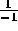

| Rational Spiral |
Rational numbers can be expressed as the division of two integers. They are also countable. This means that an order can be placed on them just like the natural numbers. But this ordering is not obvious, and is not unique. Here is one way to do it: imagine a plane where the X-axis represents the denominator of a rational number and the Y-axis represents the numerator. Starting at the origin, spiral clockwise away from it. Each integer pair that you encounter will represent a rational number. See the figure below.
The first rational number that you will encounter is . But wait, this is not a rational number! Therefore, this pair must be skipped. Each time that you pass the Y-axis, the denominator will be 0, which generates an illegal rational number. You will have to skip all of these.
You will also encounter many repeats. For example is the same number as  . Only count the first occurance of rational numbers in the spiral. Also be aware that numbers can be reduced, which can also cause repeats. For example reduces to , so it is a repeat. Be sure to skip all these too.
Given these rules, you can generate an ordered listing of all the rational numbers which does not skip or repeat. Amazing, isn't it?
Your mission, should you choose to accept it, is to order the rational numbers.
There will be several lines of input. Each line of input will have a single integer which represents which rational number to output. For example, if a line of input is 4 then print out the 4th rational number. Important, the list starts with the zeroth element.
For each line of input, print out the rational number in this form: numerator, followed by a space, followed by a forward slash, followed by a space, followed by the denominator.
Note: if the rational number is negative, the minus sign must be printed with the numerator. For example, do not print out 4 / -1 , print -4 / 1 even if you are at the (denominator == -1, numerator == 4) location on the spiral.
0 1 2 3 10
1 / 1 0 / 1 -1 / 1 -2 / 1 3 / 2